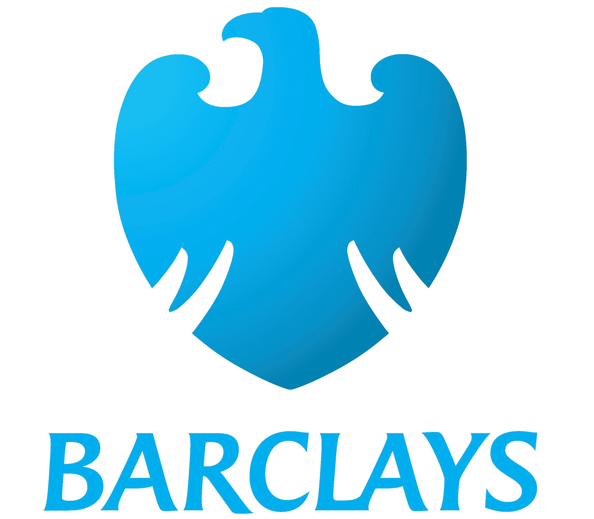

(512) 947-2711
shawn_catoe@yahoo.com
ProfileResourceful, dynamic professional with broad range of experience across information technology and large scale programs. Highly skilled in strategic planning, application & integration design patterns, development, testing, release management, and operations. Strong leader and motivator who excels in teaching, training and empowering employees. Demonstrated strengths in project resource planning & management, distributed computing, product development, and problem & issue resolution. Proven track record of success in creative, effective and distributed application design across multiple lines of business. Flexible, adaptable, results driven and committed to quality process and product. |
Summary
|
Experience
PayPal | Austin, TX | Sept 2017 - Present
Senior Engineering Manager - Identity Solution Engineering and Support
- Managing 2 engineering teams (7 directs, 1 manager with 6 directs, 2 annual interns).
- Lead of the Identity domain solution design, Tenant integrations, and run-the-business support.
- Supported PayPal and their brands such as: Braintree, Venmo, Honey, Xoom as well as partners: Uber, Facebook, Disney, Shopify and BigCommerce.
- Paired with Identity's consuming teams to disposition all change requests for consultations, acceptance, and inner-sourcing.
- Responsible for all Identity solution designs in collaboration with architects and platform engineers.
- Provided training, example code, and usage guides for all Identity APIs.
- Managed all Identity incoming support requests and command center pages.
Senior Engineering Manager - Identity Platform
Managing the Businesses and Tenancy specifications and implementations for PayPal and associated brands(Zettle, HyperWallet, Venmo, Braintree, Honey).
- Managing 2 engineering teams (10 employees, 6 contractors, 2 annual interns) responsible for Multi-Tenancy (12K req/sec) and the Merchant Profile (23K req/sec).
- Led Identity domain operations review. Established a domain-wide perspective by rolling up reports and dashboards into a single view with an associated weekly cadence for follow-ups.
- Coordinated architects and lead engineers across the Identity domain to redesign User Profile services (29K req/sec and 1.7B operational accounts).
- Shopify - updated the Business profile and Tenant platforms with various features to meet Shopify's needs.
- Managed incoming issues for a security hackathon (24 X 7) by organizing external responses while maintaning a prioritized issue list.
- Oversaw the creation of Tenant events for cross-domain notifications and an async daemon to orchestrate long running operations.
- Implemented a Quality, Stability and Efficiency process and cadence. This resulted in double digit percentage increase in UTs and FTs, as well as a 0.3% increase in availability. During this effort optimizations were uncovered that further reduced latency by 120ms for the Business Profile.
- Established a 2 tier internal support program based on the SDET practice which reduced BIR by +80% and OOSLA to less than 1%.
- Supported staff through the pandemic using various techniques for motivation, wellness and enthusiasm which resulted in a +20% increase in the change rate.
- Led the formulation of a data migration process for +4B records with 0.0% of customers impacted.
Senior Architect - Identity
Identity: Designing the Businesses Specification and Multi-Tenancy hierarchy for OneIdentity.
- Multi-Tenancy
- Successfully migrated large enterprises from a legacy model into the multi-tenancy model.
- Merchant Profile
- Coordinated a rapid influx of compliance requirements into milestones releases to ensure delivery expectations were met.
- Designed a new merchant stakeholder representation to unify compliance requirements globally.
Senior Architect - Payments
Auth-Rate: Improved the authorization rates of credit card transactions by 100 basis points.
- Account Updater
- Generated $33M of revenue in 2018, $21M in 2019, on track toward $1.1B incremental revenue by 2021.
- Tuned the solution leading to $350K savings in operational costs.
- The percentage improvement in authorization rates resulted in partners directing more traffic to PayPal.
- Led the solution design and development to integrate with Mastercard's ABU, American Express' CardRefresher and Visa's VAU solutions.
- Led the solution design and development to obtain ad-hoc updates from issuers such as Chase, Wells Fargo and Discover.
- Led the solution design and development to expand the offering to internal tenants (Braintree) and external parties.
- Leveraged CQRS and Event Sourcing to improve performance from 6M records a month to +2B per month.
- Led the replatforming of a 6 year-old batch system to an event driven system.
- Bank Identification Number (BIN)
- Leveraged CQRS and Event Sourcing to improve performance of ReST queries to 11.5K / second or 6B per day w 2ms response time for 95% of requests.
- Developed an aggregation and assembly process to score inputs in order to create an "Active" set of data.
- Implemented 3 layers of read resiliency in support of availability.
- Patent pending for "Framework to process Financial Reference Data".
Barclaycard | Wilmington, DE | Sept 2016 - Sept 2017
Executive Director of Operations and Technology
- Ranking member of the CTO's team of 35.
- Managed an international team of 7.
CardNG: A transformation of the existing credit card application platform to a CQRS, Event driven platform based on Domain Driven Design.
- Managed an $11M budget and a staff of 125 people.
- Acted as technical product owner role for the application platform.
- Drove the alignment of infrastructure solutions across regions.
- Drove the alignment of devops solutions and practices across regions.
- Aligned engineering by products; forming durable teams.
- Leveraged Domain Driven Design to define strategy.
- Formed a Community of Practice for federated domain architects to collaborate and align solutions and paractices.
- Initiated a standard of practice for sharing internal APIs.
Cockpit: Updating the German mobile application from read-only to interactive.
- Aligned delivery solution with the expectations of the German COO/CIO.
- Segrated APIs and implementations by domains to isolate release cycles and parallelize delivery.
Technology Domains: Worked at a Barclays group level to estabilsh architectural patterns for both kappa and lambda architectures.
- Lead the domain for all Barclays business units as a member of the Group Technology Council.
- Established a Community of Practice spanning the Investment, Retail and Merchant Banks.
- Defined archtectural patterns and documented evolution paths to the target state architectures.
- Mapped existing projects and funding to the domain to align concentrated funding for future evolution.
PayPal | Austin, TX | June 2011 - Sept 2016
Senior Architect - Payments & Credit
Commercial Entity: Replatformed a 5-year-old system that aggregates PayPal’s total payment volume, subdivided by merchant. Qualifying merchants then have a greater compliance burden to continue taking payments.
- Transactions are fed into Elasticsearch from Settlements and watchers are used to roll up data daily to enable merchant management.
- Replatformed the issuer integration using the design and existing components from Account Updater.
Stand-In: Created PayPal's enterprise wide Stand-In ability complete w real-time transaction processing and stateful, scheduled transaction replay.
- Leveraged UML to stabilize the requirements between product and engineering.
- Prototyped the entire solution in NodeJS to validate the integration patterns.
- Delivered a REST based component for real-time processing, a messaging solution for replaying, a Kafka based transaction journal and a NodeJS based admin UI.
- Load tested to 210 TPS at 90ms response time per 8 CPU/32 GB node.
Global Credit Expansion: An effort to expand the PayPal credit offering across all supported regions; initially US, UK, DE followed by FR, IT, ES.
- System Monitoring: Full technical monitoring with distributed tracing and log aggregation.
- Architected all aspects of system and component metrics, interactions and alerting.
- Prototyped the entire solution in NodeJS to validate the integration patterns.
- Credit 2.0: An effort to redesign the PayPal credit frameworks, domain model and partner integrations.
- Prototyped COBOL integration with a new partner.
- Early adopter of the latest Java service framework and helped to finalize their product.
- This effort focused on AU first followed by US (rewrite), FR, IT, ES, SP.
Senior Technical Lead of Architecture - Consumer
Digital Wallet: An effort to re-platform and redesign PayPal's consumer facing web presence.
- Domain Framework: A services based bridge pattern.
- Architected a framework, which isolates web service changes from existing applications.
- Progressive Rendering (APEX): A framework which uses multiple threads to process a request.
- Designed and implemented two different server side patterns to compare effectiveness.
Installments - Brazil: A re-platforming effort for installment payments use cases.
- Drove product and business owners to clarify the requirements and focus the delivery goals in order to move the project forward.
- Created a UML portfolio for the project to ensure product and development had the same understanding.
Bonanza: The design and development of PayPal's banking & bill pay experience.
- The lead architect for all consumer facing applications and 3rd party service integration.
- Leading the collaboration to establish an internal taxonomy for a new business domain.
Victoria's Secret: Late requirement due to contract update; requirements to deployment in 6 weeks.
- Quickly triaged issues as they arose in order to unblock the delivery of the solution.
- The solution was designed, implemented and delivered in 6 weeks with no post deployment issues.
SoftBank: A stabilization effort VIP partner's integration operations.
- Executed in depth design and code reviews to ensure a high level of quality in solutions that effect SoftBank.
- Collaborated to design a partner centric test simulator to run against future deployments.
Russia roll-out: The full introduction of the PayPal experience for Russia.
- Lead architect (end-to-end) for the project.
- Created a system wide view of the project covering each domain's facet.
PayPal Lite: A lightweight experience for APAC.
- Collaborated with architects across the organization to deliver PayPal Lite under tight time-lines.
- Managed the technical aspects through consistent collaboration and feedback with the implementation team.
Engineering Excellence: Vertical Solutions requires the highest level of engineering craftsmanship in its role working across domains to deliver targeted solutions.
- Assessed the talent pool, developed goals, created curriculum and drove implementation of the program.
- Worked across teams, time zones, and cultures to motivate engineers to focus on quality craftsmanship.
Dell | Round Rock, TX | Dec 2010 - June 2011
Software Engineer III
Virtual Integrated Services: A datacenter management appliance which simplifies managing physical and virtual servers as well as the associated storage and networking configurations.
- Managed a team of 7 developers and 2 testers as a Scrum Master.
- Designed Cloud Computing (PaaS and IaaS) services for simplified operating system, server, storage and networking datacenter management.
- Led the elaboration and subsequent refactoring of 3rd party integrations.
ERCOT | Taylor, TX | May 2004 - Dec 2010
Senior Enterprise Architect
Daily Duties
- Created standards, guidelines and position papers to ensure consistency among projects.
- Created models such as: Capability Maturity Model, Domain Model, Information Flows and Deployment Diagrams
- Participated in the ISO/RTO Technical Council's (ITC) Architecture Working Group (AWG) to ensure IT compliance with NERC standards and regulations.
Texas Nodal Transition: Assumed the Nodal Enterprise Architect role, which is responsible for the technical design and delivery for the $646M Nodal program.
- Responsible for 14 business systems comprised of 236 individual applications.
- Managed a team of 8 technical architects.
- Identity and Access Management
Architected and provided implementation guidance for the replacement of the identity management system and the upgrade of access management infrastructure.- Led the creation of use cases and sequence interactions.
- Ensured regulatory compliance by incorporating specific features to support audits.
- Cloud Computing and SOA
Initiated efforts and assisted in directing the corporate goal of Software as a Service (SaaS) model.- Assisted preparing the market for web services as the architect for the API working group.
- Established the guiding principles that determined and drove the design of services.
- Created a web service sandbox for the market, which demonstrated Nodal web services.
- Market Information System
Architected and provided implementation guidance throughout the duration of the project.- Facilitated and drove the technical design of the portal, policy management and security model.
- Led the design of real time dashboards and the supporting systems which provide the data.
- Current Day Reporting
- Facilitated and drove the technical design of the reporting framework.
- Integrated the business process for tracking reports into the framework for creating the report.
Capacity Planning: Oversaw efforts that support 8 production, 2 test, and 4 development environments. Increased server count from 300 to over 1,200.
- Oversaw virtualization adoption for non-production environments.
- Participated in the requirements gathering, design, and programming of 2 new 10,000 sqft. datacenters.
Lead Architect in the NIST SmartGrid effort
- A member of the NIST SGIP.
- A member of the IEEE P2030 TF2; assisting the modeling subgroup with 61850 integration.
- Drive the creation use cases for PAP03 & PAP07; submitted to NIST via the IRC.
Software Development Life Cycle: Initiated efforts to continually improve development processes, security and reliability.
- Authored web Presence and Service Approach strategy guide.
- Implemented a build orchestration tool for consistent migrations and reduced deployment times.
- Implemented a knowledge base for departments to share information and reusable code libraries.
The Grendel Group | Taylor, TX | Nov 2003 - April 2004
Contractor to ERCOT
- Redesigned and expanded the functionality of the ERCOT Retail UI to be in line with standard web presence.
Vegas.com | Las Vegas, NV | Mar 2003 - Nov 2003
Software Engineer
- Java developer on a team of 5 supporting 6 web applications.
EMC Mortgage Corporation | Irving, TX | Mar 2002 - Mar 2003
Programmer III
- Lead Java developer on the web Access to Imaged Documents application, which resulted in $220K annual savings.
TRX Technology Services | Dallas, TX | Nov 2000 - Oct 2001
Software Engineer
- Lead Java Developer on a suite of meeting hosting and management applications.
AllGood Media | Dallas, TX | May 2000 - Oct 2000
Java Developer
- Lead Java developer for a wizard style website creation tool.
Pegasus Solutions | Dallas, TX | June 1999 - April 2000
Programmer Analyst I
- Developed Y2K updates to a JavaScript application that 3rd parties used to support their content on Pegasus’ servers.
Education
|
Bachelor Degree Sam Houston State University Hunstville, TX - 1996-99 Bachelor of Science in Computer Science Minor in General Business. |
Certifications
|